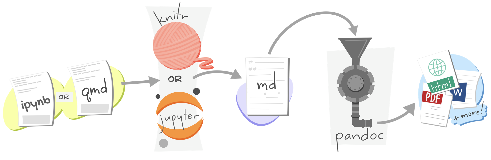
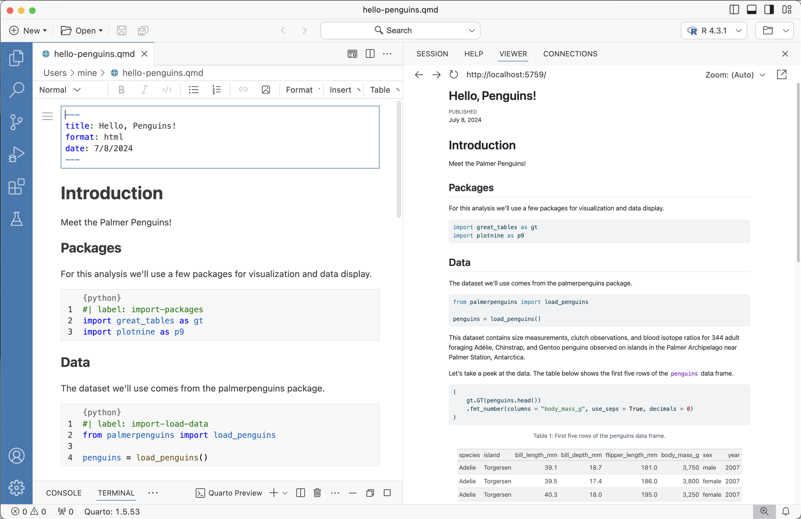

Hello, Quarto!
CIPPCD 2025: Dynamic Reproducible
Documents for Public Policy with Quarto
Posit PBC
Hello!

Who are you?
You know some Python + Markdown
You have worked in VS Code and/or Jupyter Lab
You want to learn about Quarto!
Join our workspace on GitHub Codespaces
github.com/juliasilge/cippcd-2025
Or alternatively, set yourself up to work locally:
What is Quarto?
Quarto is…
…an innovative, open-source scientific and technical publishing system compatible with Jupyter notebooks and all your favorite plain text markdown editors

Artwork from “Hello, Quarto” keynote by Julia Lowndes and Mine Çetinkaya-Rundel, presented at RStudio Conference 2022. Illustrated by Allison Horst.
With Quarto…
you can weave together narrative and code to produce elegantly formatted output as documents, web pages, blog posts, books and more, with:
- consistent implementation of attractive and handy features across outputs: tabsets, code-folding, syntax highlighting, etc.
- defaults that meet accessibility guidelines as well as features that enable good practices for producing accessible documents
- native multi-lingual support for multiple languages like Python, R, Julia, Observable, and more via the Jupyter engine for executable code chunks
A tour of Quarto
Sit back and enjoy! Or follow along with hello-penguins.qmd.
Activity
- Running individual cells
- Rendering a document
- Editing with source editor and visual editor
- Inserting images and lightbox effect
- Inserting tables
- Customizing formats:
pdf,docx,revealjs - Customizing format options:
code-fold,toc - Code cells: labels, alt-text, execution options (
echo,warning) - Cross referencing figures and tables, with and without the visual editor
- Converting between Jupyter Notebooks and plain text markdown documents
How it works
Revisit: What is Quarto?
Quarto is a command line interface (CLI) that renders plain text formats (.qmd, .rmd, .md) OR mixed formats (.ipynb/Jupyter notebook) into static PDF/Word/HTML reports, books, websites, presentations and more.
Usage: quarto
Version: 1.6.42
Description:
Quarto CLI
Options:
-h, --help - Show this help.
-V, --version - Show the version number for this program.
Commands:
render [input] [args...] - Render files or projects to various document types.
preview [file] [args...] - Render and preview a document or website project.
serve [input] - Serve a Shiny interactive document.
create [type] [commands...] - Create a Quarto project or extension
use <type> [target] - Automate document or project setup tasks.
add <extension> - Add an extension to this folder or project
update [target...] - Updates an extension or global dependency.
remove [target...] - Removes an extension.
convert <input> - Convert documents to alternate representations.
pandoc [args...] - Run the version of Pandoc embedded within Quarto.
typst [args...] - Run the version of Typst embedded within Quarto.
run [script] [args...] - Run a TypeScript, R, Python, or Lua script.
install [target...] - Installs a global dependency (TinyTex or Chromium).
uninstall [tool] - Removes an extension.
tools - Display the status of Quarto installed dependencies
publish [provider] [path] - Publish a document or project to a provider.
check [target] - Verify correct functioning of Quarto installation.
help [command] - Show this help or the help of a sub-command.Under the hood

jupyterevaluates Python code and returns a.mdfile along with the evaluated code- Quarto applies Lua filters + CSS/LaTeX which is then evaluated alongside the
.mdfile by Pandoc and converted to a final output format
Under the hood
jupyterorknitrevaluates Python, Julia, R, or Observable code and returns a.mdfile along with the evaluated code- Quarto applies Lua filters + CSS/LaTeX which is then evaluated alongside the
.mdfile by Pandoc and converted to a final output format
From the comfort of your own home



Render and preview
in the Terminal in VS Code, Positron, or JupyterLab
Render to output formats:
# ipynb notebook
quarto render notebook.ipynb
quarto render notebook.ipynb --to docx
# plain text qmd
quarto render notebook.qmd
quarto render notebook.qmd --to pdfLive preview server (re-render on save):
Render and preview
in the Editor in VS Code or Positron
Install and enable the Quarto extension
Clicking on Preview or Cmd + Shift + K
Quarto formats
One install, “Batteries included”
Quarto comes “batteries included” straight out of the box:
HTML reports and websites
PDF reports
MS Office (Word, Powerpoint)
Presentations (Powerpoint, Beamer,
revealjs)Books
Manuscripts
Beyond! 🚀
- Any language, exact same approach and syntax
Many Quarto formats
| Feature | Quarto |
|---|---|
| Basic Formats | html, pdf, docx, typst |
| Beamer | beamer |
| PowerPoint | pptx |
| HTML Slides | revealjs |
| Advanced Layout | Quarto Article Layout |
| Cross References | Quarto Crossrefs |
| Websites & Blogs | Quarto Websites, Quarto Blogs |
| Books | Quarto Books |
| Interactivity | Quarto Interactive Documents |
| Journal Articles | Journal Articles |
| Dashboards | Quarto Dashboards |
Your turn
Activity
In VS Code, open the hello-penquins.qmd file. Render the document to HTML.
Add an
authorfield in the YAML and add your name.Add some text and style it with bold, italics, etc, using the source editor as well as the visual editor.
Modify the figure to add units to the axis labels: grams for body weight and mm (milimeters) for flipper length. Render or preview the document and make sure the changes are reflected in the HTML output.
Change the html theme to
sketchy. See https://quarto.org/docs/output-formats/html-themes.html for documentation on HTML theming.
05:00
Wrap up
Where does the name “Quarto” come from?
Learn more
quarto.org/docs/guide > Authoring & Computations
Thanks!
Slides created with Quarto